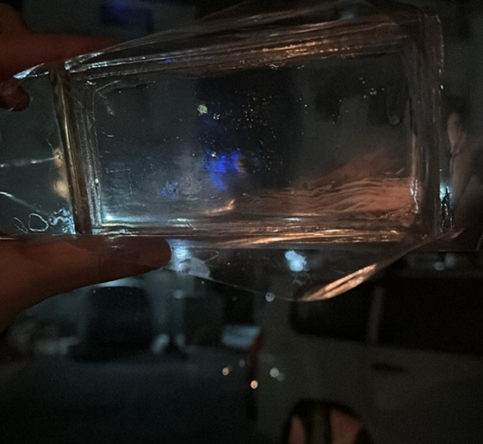

Glassdio Automobile lens
Existing 5G Problem: In-car 5G and GPS degrade due to coverage gaps (rural distance to macro cells), urban blockage/corners, network congestion, and weather-related fading.Automotive glass typically adds ~3 dB attenuation at 3–4 GHz; coated/laminated and angled glass can be worse. Impacts: lower data rates, dropped calls, delayed driver-assistance apps, unreliable navigation, reduced fleet/location tracking accuracy.
Our product solution: A first-of-its-kind transparent sticker that couples RF through glass using proprietary, high dielectric, low loss, highly transparent flexible EM materials. It reduces window-induced attenuation and improves coupling for both 5G and GPS bands.
Evidence and comparison: Field tests (urban/suburban drive routes, mixed weather): 5G: +50–80% median throughput versus a baseline phone used in-car; peaks >100% in low-SINR corridors. Link metrics: RSRP +2.5 to +4 dB; SINR +1.5 to +3 dB, depending on glazing and angle of incidence. GPS: median horizontal error reduced by several meters in urban canyons; faster TTFF and re-acquisition after turns/tunnels.
Key features:
- Ultra-transparent for clear driver visibility; flexible to conform to curved glass.
- Tool-free installation in minutes; leaves no residue
- Works across 5G mid-band and common GPS bands for simultaneous comms and positioning benefits.
- Our solution is cable-free, transparent, and compact.

Core value proposition:Restore lost in-car signal quality through windows, delivering faster 5G data and more accurate GPS with simple, app-guided installation. The ultra-transparent, easy-on/off sticker recovers window-induced loss and improves both throughput and navigation accuracy during real driving, validated by side-by-side tests.
Note: Specifications and data may be modified based on the development process